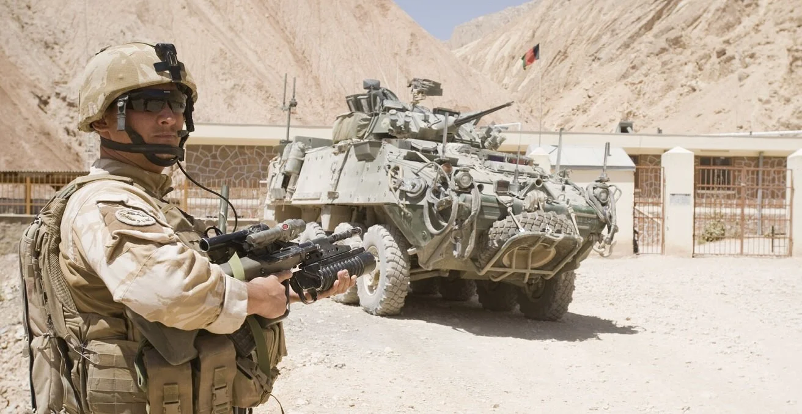
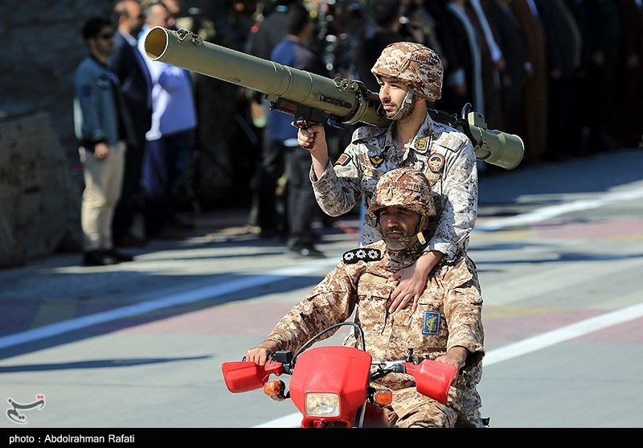
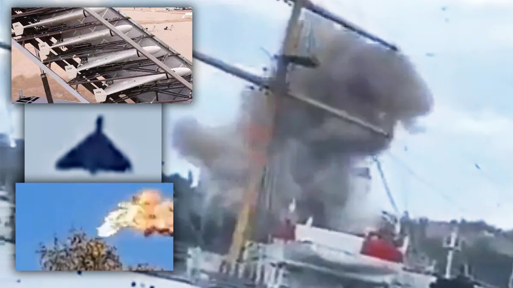

Iran, the United States, and Israel are all playing different games — and each side believes time favors them in different ways.
The United States and Iran are not just enemies with different weapons. They are competitors with different strategic logics. America tends to pursue dominance, degradation, and control. Iran tends to pursue survival, escalation management, and asymmetric punishment. Predictive History’s game theory framing emphasizes exactly this mismatch: the stronger player wants decisive resolution, while the weaker player wants to drag the game into forms where strength matters less. Predictive History’s recent videos explicitly frame the Iran conflict through “the law of asymmetry” and “the law of escalation.”
American strategy
The American way of war usually depends on overwhelming advantages: air superiority, intelligence, logistics, precision targeting, and command disruption. The goal is to break the enemy’s capacity and will to continue. In simple game theory terms, the U.S. wants a shorter game where material superiority decides the outcome.

U.S. Marine Corps training exercise
Iran’s strategy
Iran cannot win that short game directly. So it plays a different one. It stretches time, widens the battlefield, blurs military and economic pressure, and tries to raise the costs of escalation. Its tools are not just missiles and drones, but also geography, shipping threats, regional proxies, ideological mobilization, and the possibility of forcing outside powers into political overreach.

Iran Revolutionary Guard parade showcasing Russian and Chinese supplied MANPADS
The law of asymmetry
The weaker actor often has an advantage when the stronger actor needs a clear victory and the weaker actor only needs to avoid collapse. Iran does not need to conquer Washington or defeat the U.S. military. It needs to remain standing, keep imposing costs, and prevent a clean strategic success. That logic matches broader current reporting portraying Iran’s bet as endurance and disruption.

Iranian Shahed drone strike on civilian port in Dubai, UAE
The law of escalation
Escalation is dangerous because each side thinks it can control the next move, but each move changes incentives. A strike meant to restore deterrence can instead create pressure for retaliation. A decapitation attempt can harden resolve. A move meant to end the war can widen it. That is why escalation ladders are so unstable: once prestige, credibility, and survival are involved, restraint starts to look like weakness.
Core mismatch
America believes enough pressure can force Iran into compliance. Iran believes enough survival can force America into frustration. America seeks decisive degradation. Iran seeks strategic exhaustion. America wants the war to behave like a military contest. Iran wants the war to become a regional and economic trap.
Strategic conclusion
The real danger is not that one side miscalculates raw firepower. It is that each side misunderstands the game the other is playing. The U.S. may think it is playing a game of military dominance, while Iran thinks it is playing a game of endurance and disruption. That mismatch creates a risk of escalation that neither side fully understands.